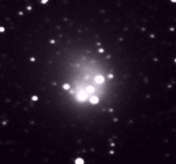

Japan:
April 20, 1996
Another object, "moving with the comet",
and "equipped with a dark funnel".
The full image is available.
{kind=link}
- A star: SAO 162944 (an excerpt from the Digital Sky Survey is available)
- Dark funnel: CCD trapping (never beleive a sharp feature along the columns of a CCD!).
- SAO star appears less elongated because it is mutch brighter than the upper intensity threshold.
November 14, 1996
This image was the first reported "Saturn-like Object"; the full image is available on this site.
The image and a description of the observations of this "scary star" can be found on Shramek's home page
- A bright star ( SAO 141894 ); an comparison between the full image and the Digital Sky Survey is available.
- Some diffraction effects
November 14, 1996
Alberto Quijano Vodniza, Jose Alonso

Dark rings around the comet.
{kind=link}
Nov.10, 1996???

"Saturn-like object"
The full image, with the comet, is available on this site. This image appeared on Art Bell's page, with no indication on its origin.
{kind=link}
The object seems elongated horizontally, which is difficult to explain (assuming the image has not been doctored). At this point, it is really hard to say anyting more about this image based only on the jpeg version: we really need more information about this observation.
(Update Jan.1, 1997) A
very detailed
study of that picture has been perfomed and is available
on the
Enigma
site. The conclusions are the following:
Without more information, no other conclusions can be
objectively reached. In my subjective opinion, the HBST image
appears to be misinformation. Ron"
I tend to agree with his conclusions.
Japan:
November 16, 1996

"Saturn-like object" from NAO, Japan.
Full image, with the comet, is available on this site and on the NAO server.
{kind=link}
{kind=link}
- It is listed as GSC 5086 717 in the HST Guide Star Catalogue, a 12th mag star (thanks, Ron!)
- Diffraction spike in one direction. The other ones have been smeared by the trailing, but are still visible after adjusting the threshold to a lower value.
- This star appears less elongated than the others because it is brighter (threshold).
- Some hints of charge bleeding (vertical line above the
star), because the star is quite bright and probably
saturating the CCD.
released by Art Bell and Whitley Strieber. This doctored image released on Jan.15, 1996, original image taken on Sep.1, 1995 at Mauna Kea.
